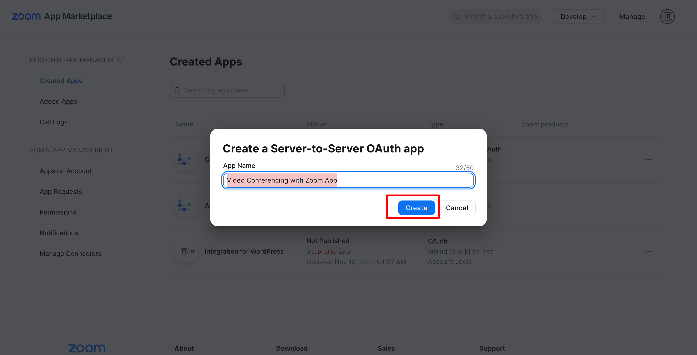
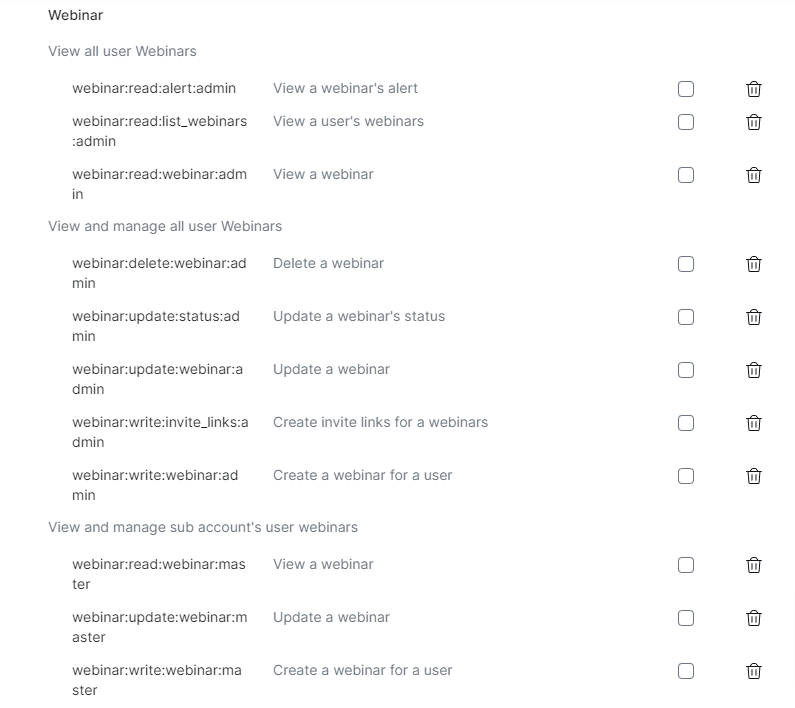
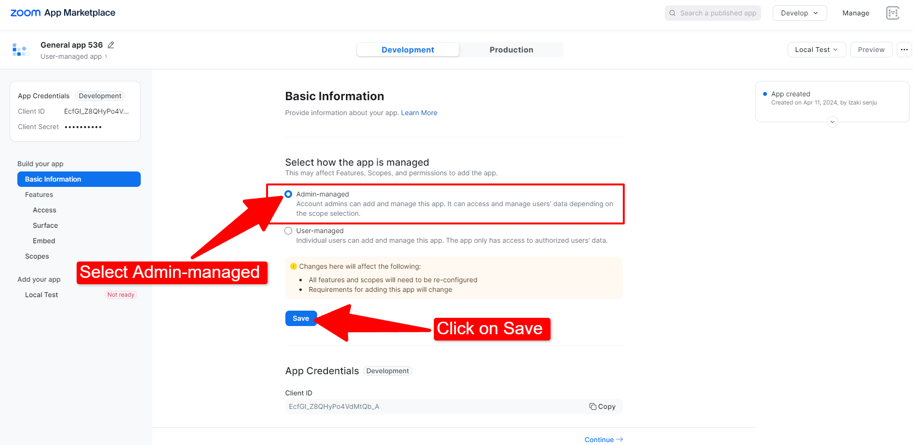
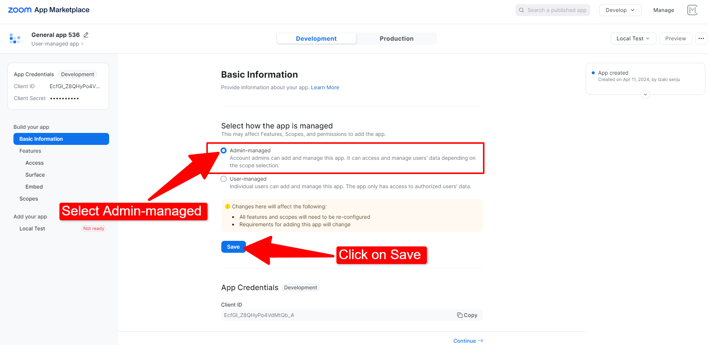

Setup Video Conferencing with Zoom API
Here below are the steps to setup Zoom into WordPress.
Getting Started
For Video Conferening with Zoom plugin to work you will be using Server-to-Server OAuth app type.
In order to setup the plugin you'll first need a Zoom Account. So, sign up if you don't have a Zoom account already or just sign in with your existing Zoom Account and follow the next steps.
Setup Server-to-Server OAuth
In order for you to setup the plugin, carefully follow all the steps below:
Creating Server to Server App type
- Goto Zoom Marketplace page from https://marketplace.zoom.us/
- Now, you will need to create a "Server-to-Server" App type from here.
- Hover on Manage dropdown and select "Build Server-to-Server App like shown in below image.

OR you can simply click this https://marketplace.zoom.us/develop/create and this will open a modal like in below screenshot.

Click on Server to Server OAuth App and click create.
Setting Up API Credentials:
After you click on "Create" button in the popup you will be asked few details to fill up.
1. App Name
Add you app name to anything of your Preference so that you can remember that this app type is for your WordPress website.

2. App Credentials
Once App is created - you will be taken to an App Overview page where you can see App Credentials. These highlighted credentials will be used in our WordPress Video conferencing Zoom plugin to connect with your account. We'll get back to this in next steps. Click Continue for now.

3. Information Page
In this next step you will need to add Contact name, Contact email and Company name on the information page in order to activate this app type. Fill in the details according to your needs.

4. Scopes Page
Ignore "Feature" page - After you've added details from previous step - Goto Scopes page from the left navigation menu and Click on "Add Scopes" as highlighted in the screenshot.

Scopes are basically added in order to allow permissions to access your Zoom meetings into Video Conferencing Zoom plugin. So, this step is very crucial step and you should properly assign each of the defined scopes properly otherwise you will get no permission issues when trying to create,delete or access Zoom Meetings from your WordPress site.

See Required Scopes section. in order to add necessary permissions. Come back to this step after you've added all the necessary permissions.
5. Activation
Finally, click on Activate your App button and your activated.

Required Scopes:
These below are the scopes required from step 4 when setting up the scopes for your application.
Note: Not adding any of the below permissions may result in permission issue error notices when trying to create your meeting/webinars.
Meetings
- View all user meetings
- View a meeting/meeting:read:meeting:admin
- View a user's meetings/meeting:read:list_meetings:admin
- View and manage all user meetings
- Update a meeting/meeting:update:meeting:admin
- Delete a meeting/meeting:delete:meeting:admin
- Create a meeting for a user/meeting:write:meeting:admin
- View and manage sub account’s user meetings/meeting:master
- Create a meeting for a user/meeting:write:meeting:master
- View a user's meetings/meeting:read:list_meetings:master
- Delete a meeting/meeting:delete:meeting:master
- Update a meeting/meeting:update:meeting:master
- View a meeting/meeting:read:meeting:master

Recordings
-
View all user recordings/recording:read:admin
- Returns all of a meeting's recordings/cloud_recording:read:list_recording_files:admin
- Lists all cloud recordings for a user/cloud_recording:read:list_recording_files:admin
- list account recording/cloud_recording:read:list_account_recordings:admin
-
View and manage all user recordings/recording:write:admin
- Recover meeting recordings/cloud_recording:update:recover_meeting_recordings:admin
- Recover a single recording/cloud_recording:update:recover_single_recording:admin
- Delete a specific recording file from a meeting/cloud_recording:delete:recording_file:admin
- Delete all recording files of a meeting/cloud_recording:delete:meeting_recording:admin
-
View and manage sub account’s user recordings/recording:master
- Returns all of a meeting's recordings/cloud_recording:read:list_recording_files:master
- Lists all cloud recordings for a user/cloud_recording:read:list_user_recordings:master
- Delete all recording files of a meeting/cloud_recording:delete:meeting_recording:master
- Delete a specific recording file from a meeting/cloud_recording:delete:recording_file:master
-
View your recordings
- Return a specific meeting instance's archived files/archiving:read:archived_files:admin

Reports
-
View report data
- View webinar detail reports/report:read:webinar:admin
-
View sub account’s report data
- View webinar detail reports/report:read:webinar:master

Users
-
View all user information
- View users/user:read:list_users:admin
- View a user/user:read:user:admin
-
View and manage sub account’s user information
- Update a user/user:update:user:master
- View a user/user:read:user:master
- Create a user/user:write:user:master
- View users/user:read:list_users:master
- Delete a user/user:delete:user:master
-
View users information and manage users
- Create a user/user:write:user:admin
- Delete a user/user:delete:user:admin
- Update a user/ user:update:user:admin

Webinars
-
View all user Webinars
- View a webinar's alert/webinar:read:alert:admin
- View a user's webinars/webinar:read:list_webinars:admin
- View a webinar/webinar:read:webinar:admin
-
View and manage all user Webinars
- Delete a webinar/webinar:delete:webinar:admin
- Update a webinar's status/webinar:update:status:admin
- Update a webinar/webinar:update:webinar:admin
- Create invite links for a webinars/webinar:write:invite_links:admin
- Create a webinar for a user/webinar:write:webinar:admin
-
View and manage sub account’s user webinars
- View a webinar/webinar:read:webinar:master
- Update a webinar/webinar:update:webinar:master
- Create a webinar for a user/webinar:write:webinar:master

Adding Server-to-Server OAuth Credentials to the plugin
Login to your WordPress site as an Administrator and goto WordPress admin dashboard page and goto Zoom Events > Settings page.
- Go to Zoom Events > Settings > Connect tab

- Add the Server-to-Server credentials ( Account ID, Client ID, Client Secret ) that can be viewed in the app under credentials (see step 2 above from Setting up API credentials step)

Click save to verify your credentials. If credentials are invalid, there should be a invalid warning. If everything is correctly setup then you should be able to see your Zoom Users from wp-admin > Zoom Events > Users page.
Next step is to create new Zoom Events from wp-admin > Zoom Events > Add new page.
Setup App SDK Credentials
Purpose for creating a App SDK is required for Join via Browser/Web SDK to work properly.
Generating App SDK Credentials
- Click on Build App from Zoom marketplace

OR
Go to corresponding link: https://marketplace.zoom.us/develop/create and click on create.  2. The next screen will prompt you for the Basic Information. Select Admin-managed and click on save. 
Additionally, please include the OAuth Redirect URL and OAuth Allow Lists in Basic Information.
2. The next screen will prompt you for the Basic Information. Select Admin-managed and click on save. 
Additionally, please include the OAuth Redirect URL and OAuth Allow Lists in Basic Information.  3. Click on "Continue" repeatedly until the Embed feature prompt appears. Enable Meeting SDK and click on continue.
3. Click on "Continue" repeatedly until the Embed feature prompt appears. Enable Meeting SDK and click on continue.  4. The next screen will prompt you to Scopes. Click on Add Scopes
4. The next screen will prompt you to Scopes. Click on Add Scopes 5. Add the following scope and click on done.
5. Add the following scope and click on done.
User
-
View user's zak token
- View a user's Zoom Access key/user:read:zak:admin

- View a user's Zoom Access key/user:read:zak:admin
Adding SDK Credentials to the plugin
- Go to Zoom Events > Settings > Connect tab

- Add Build App/General App credentials ( Build App Client ID and Build App Client Secret )

- To test out join via browser - you will need to create a meeting and test if join via browser is working properly
You've not successfully connected your Zoom Account in your WordPress site. You should be able to create your Zoom meetings directly from your WordPress dashboard now.
Next Steps
After you've configured your keys - Zoom meetings are not automatically imported into your site. You'll need to import your meetings or create new ones from your WordPress dashboard directly.
In order to create a new Zoom Meeting goto wp-admin > Zoom Events > Add new page and this should create a new meeting both in Zoom and as a post in your WordPress site as well.